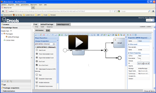
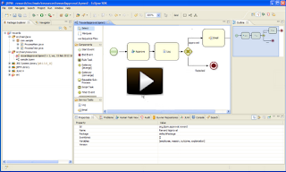
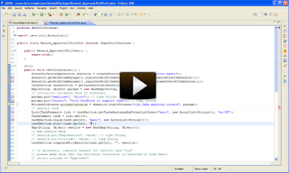
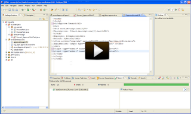
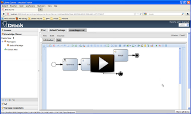
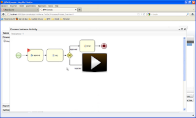

Reward system demo
The demo shows how to create a new application from scratch using a clean setup (using the latest jBPM installer) where a business user and a developer work together to create the business process. We then generate the necessary JUnit tests and task forms for this process, deploy it to the Guvnor repository and execute it on the jBPM console.
- The business user defines that first someone from HR should approve (or reject) the request
- The process should then send an approval email to they employee if the request was approved.
- The developer can then import this process into his Eclipse workspace.


- The developer generates a JUnit test for the process (see last part of the second video)
- He then fills in some of the data that needs to be passed to the process
- The test executes successfully

The fourth video shows how forms (a process form to start the process and a task form to approve requests) are generated from the process definition and customized a little.

The fifth video uploads all these files onto the Guvnor repository and builds them so they can be used in production.

Finally, the process is executed in the jBPM console, where we start a new approval process and let someone from HR reject it.

You should be able to reproduce this yourself completely, simply by following the steps in the video. Hope you all like it !

{kind=link}